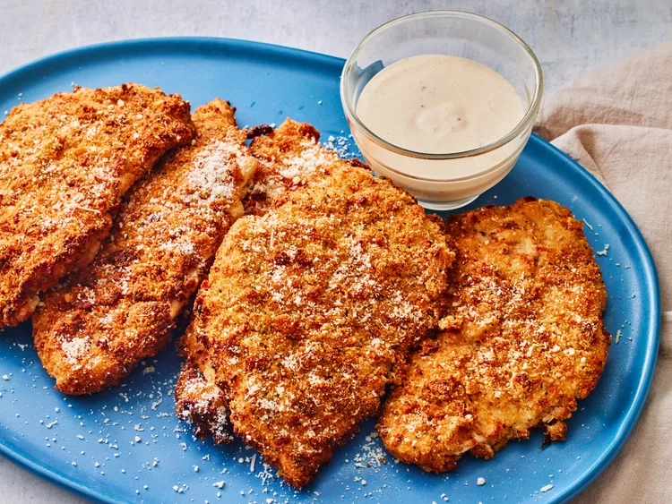

Chicken Cutlets

Description
Delicious chicken cutlets, at home, today.
Easy and delicious!
Ingredients
- Italian style bread crumbs
- Parmesan cheese
- Salt
- 3 eggs
- 1 cup of flour
- Extra virgin olive oil
- 1 pound of chicken breasts
Steps
- Slice chicken breasts thin and/or pound with meat mallet to thin.
- Add breadcrumbs, parmesan cheese, and salt (to taste) to one bowl.
- Crack 3 eggs into a seperate bowl and wisk thoroughly.
- Add flour to a seperate bowl.
- One by one, dunk chicken into the flour, then the egg wash, then into the breadcrumb mixture and set each
piece aside, until ready to fry.
- When all chicken is coated, heat up frying pan and add a quarter inch layer of olive oil.
- Begin to fry each side of each piece of chicken, until dark golden brown crust.